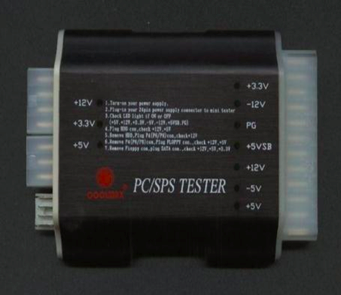

Replace A Power Supply 更換電源 <<
Previous Next >> HW2
Test a Power Supply 測試電源
為了測試PSU，可以使用萬用表或電源測試儀。儘管萬用表可以工作，但您必須能夠知道每種連接器的確切引腳排列以及每個引腳的預期電壓量。相反，購買當今市場上許多不同的計算機電源測試儀之一要簡單得多。小型LED會亮起，以告知電源是否正常工作。主板電源測試儀還會發出嗶嗶聲，以通知您它正在接收正確數量的電源。對於希望能夠快速輕鬆地測試電源的任何人來說，此設備都是必需的。要使用它，只需將主板電源連接器（20 + 4連接器）連接到測試儀的右側即可。接下來，連接設備的電源連接器（SATA，Molex，Berg等。）到測試儀的左側。如果您接受適當的電壓（3、5、12 VDC），則指示燈將呈綠色亮起。
In order to test a PSU, you can use either a multimeter or a power supply tester. While a multimeter would work, you must be able to know the exact pinout for each type of connector and the amount of voltage to expect from each pin. Instead, it is much simpler to buy one of many different computer power supply testers on the market today. Small LEDs light up to let you know if the power feeds are working correctly. The motherboard power tester also beeps to let you know it is receiving the correct amount of power. This device is a must for anyone who wants to be able to test power supplies quickly and easily. To use it, simply hook up the motherboard power connector (20+4 connector) to the right side of the tester. Next, hook up the power connector for the device (SATA, Molex, Berg, etc.) to the left hand side of the tester. The lights will show up green if you are receiving the proper voltages (3, 5, 12 VDC).

Replace A Power Supply 更換電源 <<
Previous Next >> HW2